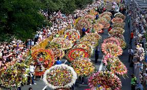
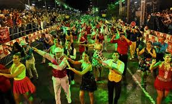
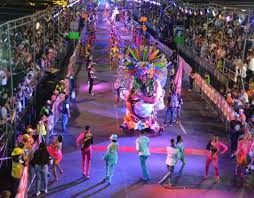
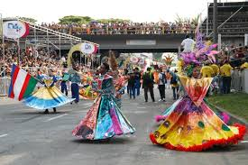

La Feria de las Flores se ha convertido en el evento insigne de Medellín, que se celebra este año, del 2 al
11 de agosto y es la oportunidad para que la “Ciudad de la Eterna Primavera” muestre al mundo el carácter,
el valor y las raíces de la cultura “paisa”.La Feria de las Flores es el evento cultural más importante de
Medellín que se lleva a cabo todos los años en agosto. A través del color y el olor de la siempreviva, el
clavel, el girasol, la orquídea y muchas más variedades, igual de bellas, son diseñadas las famosas silletas
que llegan a pesar hasta 70 kilos. A la par se realizan conciertos en diferentes escenarios con artistas de
renombre, el festival de la trova, y eventos para integrar a las familias antioqueñas. La preparación es
desde febrero cuando se empieza con el sembrado, haciendo los cálculos perfectos para que cada variedad
esté florecida para la fecha de la Feria de las Flores. Para la elaboración de las silletas participan todos
los integrantes de cada familia dedicada al cultivo de flores en las 11 veredas del corregimiento y el
diseño va de acuerdo con la categoría en la que van a participar. El día del desfile es el más esperado por
estos campesinos laboriosos. La salida rumbo a Medellín es sobre las 4 de la mañana, son unos 500 silleteros
con sus familias que salen muy animados, en camiones donde llevan sus obras artísticas, fruto de su
inspiración.
|
La Feria de Cali se ha convertido en la vitrina más grande de la ciudad salsera de Colombia, en donde se dan cita turistas nacionales y extranjeros que llegan cada año a participar de este evento, del cual se puede ser parte del 25 al 30 de diciembre. |
 |
 | |
| Esta fiesta que se lleva a cabo en Navidad, da a conocer los espectáculos más vistosos de salsa y bailes internacionales con centenares de bailarines de talla internacional, quienes se han preparado durante todo el año. |
Adicional, se pueden presenciar los shows de los artistas nacionales e internacionales, quienes presentan sus más recientes éxitos en tarimas montadas para la ocasión, como la del Estadio Pascual Guerrero, en los salones acondicionados de algunos hoteles y clubes de Cali. |
 | |
| |
|||